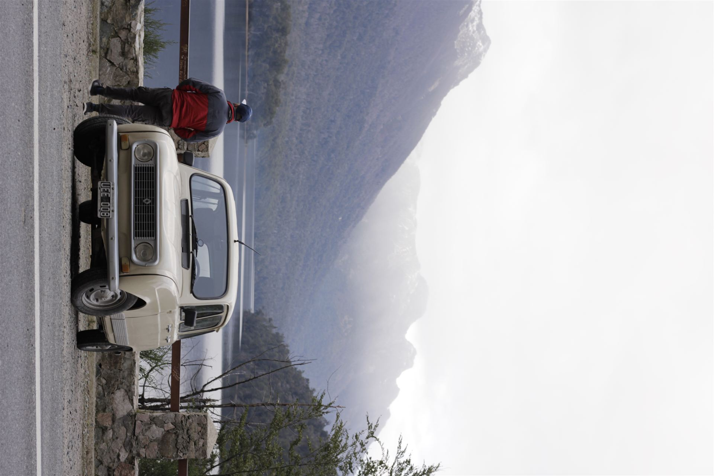
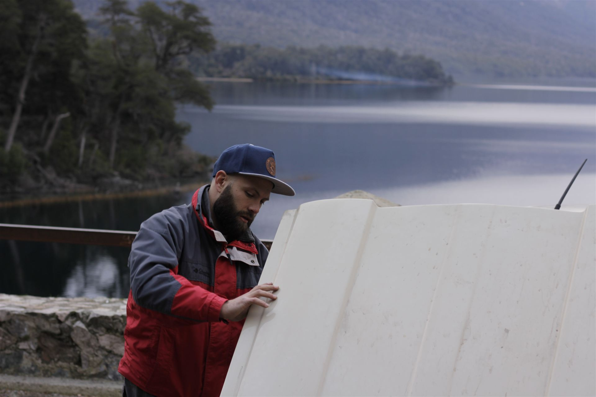
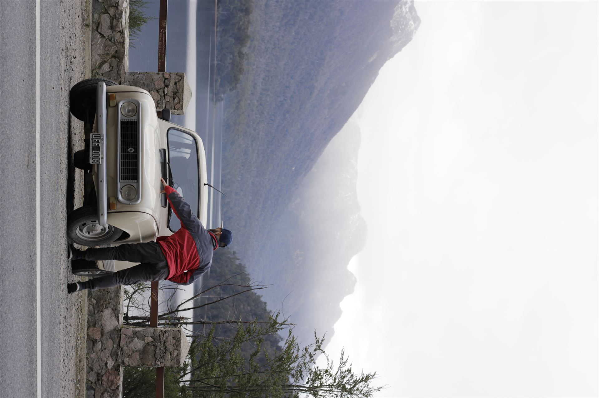

Work front · 01
Kong Split
Owning the process of splitting a monolithic API gateway configuration into pieces each squad can manage independently — runbook, squad onboarding, tracking, and the documentation that makes it repeatable.
Leandro Picot — Building Myself
v0.4
0%
Bridging Engineering & Operations.
SRE / DevOps / Release Engineer
SRE / DevOps / Release Engineer at itti — I coordinate people,
processes and technology so releases ship, and roll back, on
purpose. Where steel meets the cloud.
About
My background includes work as a railway worker and train driver, where reliability, timing, responsibility, and calm execution were part of everyday life.
Today I apply that same mindset to software delivery: clear processes, resilient systems, automation, rollback thinking, and documentation that another person can actually follow.
DevOps work, mechanical restoration, and personal memory are different materials, but they share the same practice: observe, build, verify, document, and improve. Click a work front below for the full story.
Work front · 01
Owning the process of splitting a monolithic API gateway configuration into pieces each squad can manage independently — runbook, squad onboarding, tracking, and the documentation that makes it repeatable.
Work front · 02
Deep-work mapping of how a biometric system lives in AWS — ECS services, task definitions, ECR, target groups and ALB routing — translated into operational documentation the whole team can use.
Work front · 03
Cross-team guardian of a critical migration: keeping traceability, being the reliable point of contact, and holding operational awareness across areas without becoming the bottleneck.
DevOps Lab
A space for hands-on infrastructure, CI/CD, release automation, and operational documentation.
Current project
A static platform validated by GitHub Actions — Docker build, readiness-checked smoke test, Terraform fmt/validate — and shipped to Terraform-managed AWS S3 static hosting. Docker, CI/CD, IaC and release documentation, all in one repeatable path.
Focus
Build, validate, deploy, observe, and rollback. The goal is not complexity; it is making the delivery path visible and repeatable.
Operating principle
Prefer clear workflows, small pieces, documented decisions, and infrastructure that can be rebuilt from source.
Case study
Walk the full pipeline, stage by stage →
git push ──▶ GitHub Actions ──▶ docker build ──▶ smoke test (curl)
│
└──▶ terraform fmt + validate ──▶ aws s3 sync ──▶ S3 static website
curl: (56)
The first CI run failed with curl: (56) Recv failure.
The cause: docker run -d only means the container
started — Nginx could still be initializing. A race condition.
The pipeline now retries the smoke test while the service warms up, prints logs when something fails, and always cleans up its containers. Small platform, real reliability lesson.
Publish the first Peugeot 504 restoration log.
Create a dedicated DevOps Lab page for technical project writeups.
Add a project timeline that connects releases, repairs, and learning notes.
Work & Projects
Real work fronts and the one repository that ships this very site. Hover a card to see it shine; open one for the full story.
swipe to browse →
Systems & Tools
Click any card to open what it actually runs.
app/Dockerfile
FROM nginx:1.27-alpine, version pinned — not :latest. Serves the static app/ folder directly, same image validated in CI before it ever reaches S3.
infra/*.tf
main.tf, variables.tf, outputs.tf — an S3 static-website bucket, free-tier guardrailed. fmt + validate run in CI; no terraform apply without manual approval.
.github/workflows/
ci.yml validates structure, Docker build and Terraform fmt on every push. deploy.yml keeps release separate from validation — no auto-deploy without approval.
Work front · 01
Splitting one monolithic gateway config into squad-owned pieces — runbook, onboarding, tracking. Priority: close 1–2 complete splits in DEV.
Work front · 02
ECS services, task definitions, ECR, target groups and ALB routing for FaceTec on AWS — mapped into documentation the whole team can use.
Work front · 03
Cross-team migration guardian: traceability, reliable point of contact, operational awareness across areas without becoming the bottleneck.
Discover gravity
Every one of these frames is a piece of the system: a runbook, a pipeline stage, a rollback plan — floating independently, held together by process, not by luck. Move your mouse. Nothing here falls unless you let go of the discipline that's holding it up.

Machines & Road Memories
Machines teach diagnosis, patience, sequencing, and respect for cause and effect. Those lessons carry directly into engineering production systems — a stuck bolt and a stuck deploy ask the same question: what changed right before this stopped working?
A personal archive for simple machines, roads, travel stories, and the memories that connect movement with identity.


A symbol of movement, simple mechanics, and memorable road stories.
A long-term project about rebuilding carefully, learning by doing, and respecting the original machine.
the method — the same loop for a stuck deploy and a stuck bolt: observe, build, verify, document, improve.
restoration is debugging with metal. same discipline, different material.
The trajectory
Drag horizontally — this is the long way from railway to release.
Journal
Notes on release engineering, infrastructure, restoration, and the personal process of becoming better at the work.
A good pipeline does more than run commands. It builds trust in a change before that change reaches users.
Start with symptoms, inspect the system, make one change at a time, and verify the result.
The work is technical, but the practice is also personal: consistency, focus, and the humility to keep learning.
Contact
This platform is a living portfolio for practical engineering work, mechanical projects, and personal learning.
// AVAILABILITY
Currently at itti as SRE / Release DevOps, open to conversations about platform operations, release engineering, and cross-team migrations. Click for the full picture.
What it is
Splitting one monolithic API gateway configuration into pieces each squad can own and manage independently — instead of a single shared config every team is afraid to touch.
Scope
Why it matters
Team Topologies in real time: redrawing team boundaries, not just moving config. Scope discipline is release discipline.
What it is
Deep-work mapping of how a biometric verification system lives in AWS, end to end — from container to traffic routing.
Surface mapped
Why it matters
Translates tribal knowledge into operational documentation the whole team can use — not locked in one head.
Role
Guardian of a critical, cross-team migration — the reliable point of contact holding operational awareness across areas.
What it takes
Why it matters
Leading and following at once — own everything, empower others, stay disciplined without being rigid.
Today
SRE / Release DevOps at itti, running Kong Split, FaceTec on AWS, and the GitHub Enterprise migration.
Open to
Platform operations, release engineering, and cross-team coordination conversations. Outcome-driven, no corporate-speak.
Message on LinkedIn